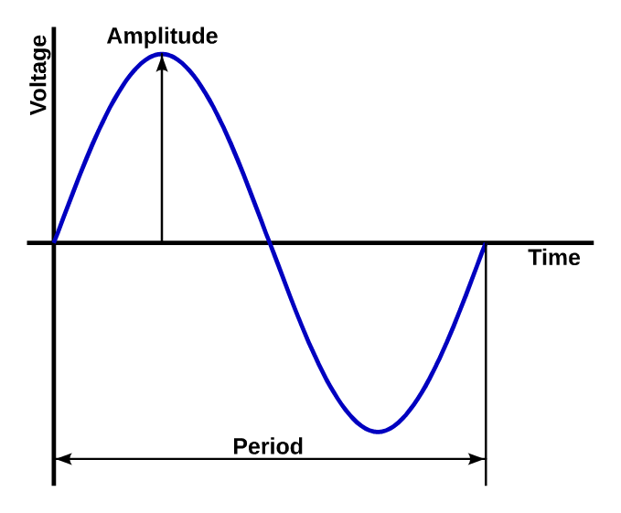

10. Alternating voltage¶
A source of alternating voltage also called alternating current is a generator that produces positive voltages and negative voltages alternately, several times per second.
The most common waveform of voltage is the sinusoidal, which can be seen in the following image:
{kind=link}

Waveform of an alternate voltage and its parameters.¶
The voltage does not vary sharply, but is changing from a zero value to a positive amplitude peak, descends again to value zero, changes to a negative amplitude peak value and ascends to assert to value zero again.
In the following simulation we can see an alternate voltage generator that feeds a resistance. The electrons move forward and backward. The upper voltage of the generator changes from positive (green) to negative (red) also alternately. Finally, in the lower oscilloscope we can see the waveform sinusoidal of voltage:
Peak amplitude and RMS amplitude¶
The amplitude of an alternating voltage is the maximum peak or value value that has that voltage.
But normally the amplitude of an alternate signal is not defined by its peak value, but for its RMS value. The RMS value of an alternating voltage is the continuous voltage that has the same effect on a resistance as the alternating voltage.
This means that the voltage of the electricity network, which is 230 RMS volts, heats a resistance like a continuous voltage of 230 volts.
The relationship between the peak value and the RMS value is as follows:
So saying that the house voltage has 230 RMS volts is the same as saying that it has 230 * 1.4142 = 325.26 volts of peak.
In the following simulation we can see an alternating voltage generator of 7.071 volts peak producing the same effect on a lamp as the 5 volt direct current generator:
Period and frequency¶
The period is the time it takes for the alternate wave to complete a complete cycle. This time is usually small, of the order of milliseconds, so it usually speaks normally of its inverse value, which is the frequency.
The frequency is defined as the number of cycles that completes the alternate wave in a second. The European electricity grid is 50 hertzs (cycles per second). The electricity grid of most America is 60 hertzs.
The formula that relates the period and the frequency is as follows:
The magnitudes and units being the following:
F = Frequency in Hertz [Hz]
P = Period in Seconds [s]
Exercises¶
What is an alternate voltage source? What is it called too?
Draw an alternate voltage signal and draw on it its main parameters.
Draw an alternate voltage source connected to a resistor.
What is the RMS voltage of an AC voltage generator and how is it calculated from the peak voltage?
Complete the following table with the peak values and the RMS alternating voltage values that are missing.
RMS voltage [V] Peak voltage [V] 230 volts 17 volts 125 volts 29 volts 5 volts Complete the following table with the frequency and period of time values that are missing.
Frequency [Hz] Period [s] 50 hertz 0.020 seconds 60 hertz 400 hertz 0.100 seconds 0.012 seconds 0.001 seconds